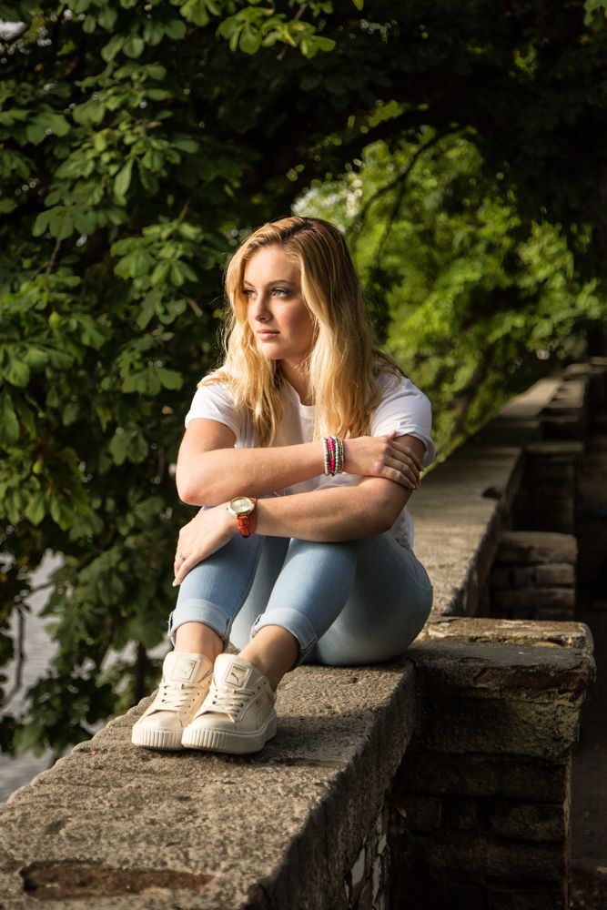

Наші послуги
Індивідуальна фотосесія
1800 грн/год 70-80 фото у авторській обробці, 10 з них ретуш.
Love story
1500 грн/год 60-80 фото у авторській обробці, 10 з них ретуш
Весільна
1500 грн/год 70-80 фото у авторській обробці, 10 з них ретуш
Наші додаткові послуги
Фотостудія
Цілодобовий творчій простір з красивим денним світлом, постійним та імпульсним.
Готовий образ під ключ
У команді працюють візажисти та стилісти по зачіскам. Можлива оренда гримерки з вашим мастером.
ДетальнішеВітаємо ваших близьких
Ви можете замовити іменний сертифікат у подарок на оренду студії або фотосесію. Відправка Новою Поштою або самовивіз день в день.
Одягаємо та стилізуємо
Співпрацюємо з магазинами прокату одягу. Ви можете підібрати Look під будь яку подію та стиль.
Про фотографа
Марія Романій
Декілька слів про фотографа. 5 років як робить людей щасливими. Зйомка з Марією це завжди: - Легко та продумано. Навіть якщо ви ні разу не були на фотосесії, то вона допоможе вам з підготовкою. - Професійно. Використовує сучасну якісну техніку, професійну обробку фото. - Відповідально. На зв'язку, обожнює свою роботу та хоче, щоб вам сподобалося все, тому фото віддає у строк, дбає про ваш комфорт та приємну атмосферу. Давайте разом робити фотокарточки.
Відгуки
Маша - настоящая волшебница! Мы искали фотографа со вкусом, который сможет поймать характер нашей пары
и
передать его в фотографиях. Маша справилась с задачей отлично. Все было безумно красиво и изящно.
Спасибо
тебе,
Маша, за эту сказку. Буду рекомендовать тебя всем своим друзьям.
Фотографии нашей свадьбы получились просто суперские! По-моему, идеальные свадебные фотографии — это
те,
при
просмотре которых возникает ощущение, что ты опять на свадьбе! Я не устаю их пересматривать по несколько
раз
на
дню! Маша, спасибо тебе большое! Ты просто талант!
Чому ми
Професіоналізм
Надаємо якісні фото та відео зйомку. Фотограф до початку зйомки телефонує вам для затвердження образів, локації. Допомогає з позуванням та ідеями, підбором одягу. Є своя команда візажистів, парикмахерів та партнери з оренди одягу.
Комфорт
Маємо свою фотостудію та проводимо виїзні зйомки подій. Навіть якщо ви перший раз на фотосесії, то не хвилюйтеся ви у надійних руках.
Відданість своїх справі
Надихаємося вашими емоціями та вогником в очах. Нам дуже важливий зворотній зв'язок, тому маємо рейтинг 4,9 за Google рейтингом фотопослуг, бо завжди є куди рости.
Тільки позитивні емоції
Обирайте тип фотосесії та знайомтеся з нашими фотографами ближче через камеру об'єктиву. Фотосесія - це значно більше ніж фото, це приємний ритуал і приємні спогади протягом довгого часу.
Наші контакти
Для броні студії або замовлення фотосесії пишіть в Viber, Telegram або телефонуйте
+38 (095) 026 25 50
pudrastudio3@gmail.com